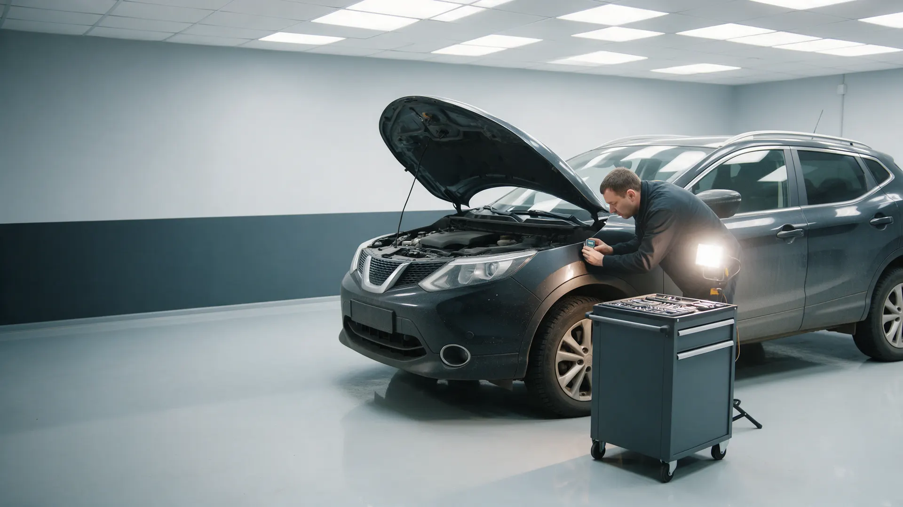
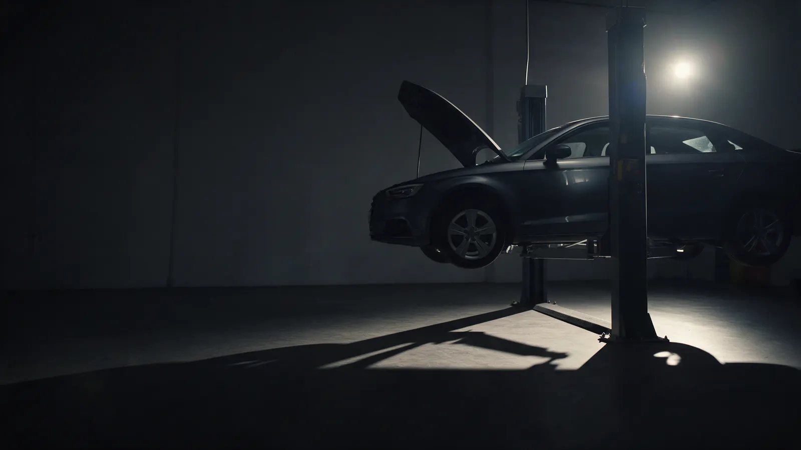
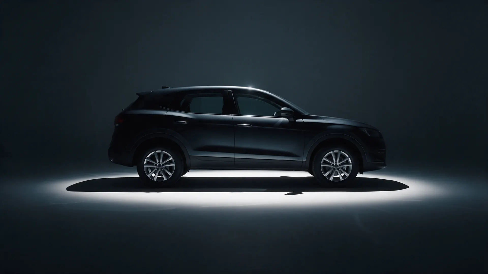
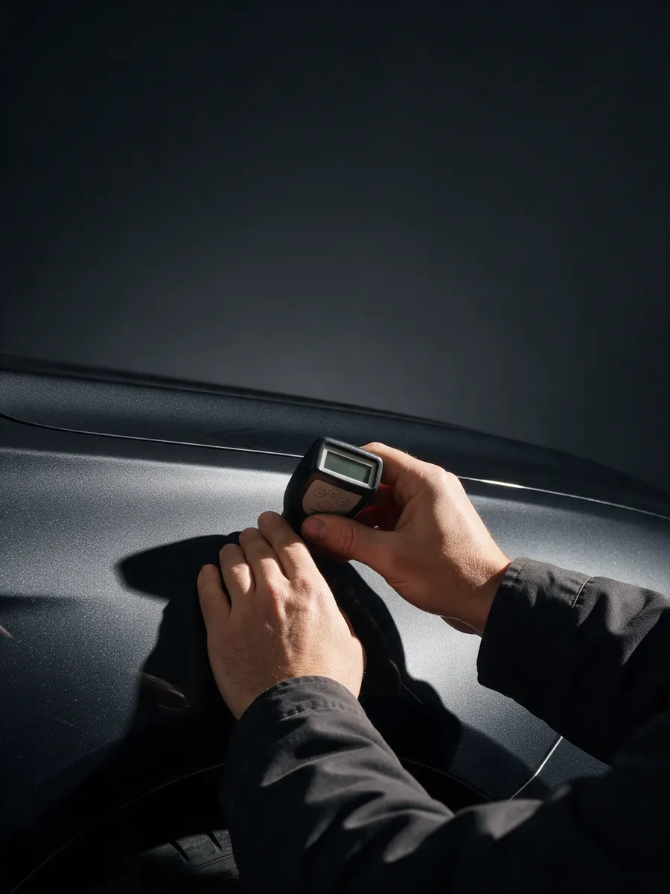
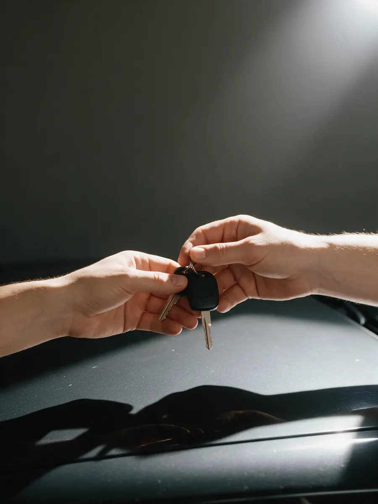

Напишите марку, год и пробег – назовём вилку цены
Ориентир – по рынку на вашу модель. Точную цену называем только после осмотра, и она совпадает с договором.

Осмотр и расчёт при вас, цена после осмотра не меняется, деньги сразу, договор в офисе или на выезде.
Назвали одну сумму, при встрече – минус сорок тысяч «за состояние». Спорить поздно: вы уже приехали, время потрачено.
Оценщик приезжает не чтобы купить, а чтобы вы никому больше не позвонили. Уезжает с вашим временем и надеждой на сделку.
Машину забрали, договор подписан, а деньги «уже в пути». Ждёте перевод, который никак не приходит.
Осмотр и расчёт при вас за 40 минут. Цену называем после осмотра – и она не двигается. Деньги сразу, договор на месте.

Пять пунктов осмотра, по каждому видно, что поднимает цену, а что её снижает. Расчёт при вас, а не «за кулисами».
Показываем, откуда взялась каждая скидка, и что можно сделать, чтобы цена была выше. Решаете вы.

Без вашего согласия ни на одном шаге ничего не подписываем и ничего не забираем.
Ориентир – по рынку на вашу модель. Точную цену называем только после осмотра, и она совпадает с договором.

Кузов толщиномером, ходовую на подъёмнике, ошибки по сканеру. Каждый минус цены – с причиной, а не «так принято».
Сумму фиксируем в договоре до передачи ключей. Деньги – наличными или переводом на месте, а не «завтра».

Переоформление делаем мы, вы не получаете чужие штрафы. Документы о сделке остаются у вас.
Точную цену называем после осмотра – и она не меняется. Ниже – что берём и на что смотрит оценщик.
Осмотр и расчёт занимают 40 минут. Выезд оценщика – без предоплаты и обязательств: если цена не устроит, просто расходитесь.
Напишите марку, год и пробег. Назовём вилку по рынку и договоримся об осмотре – цена после него не изменится.
Отвечаем в часы работы. Не любите писать – звоните, вилку цены назовём по телефону.